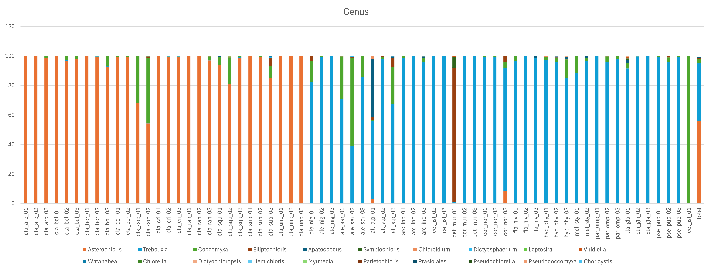

🌿 Metabarcoding with 18S rRNA: From Environmental Samples to Community Composition
🎯 Learning Objectives: By the end of this workshop, you will:
- Understand the principles and applications of metabarcoding
- Know the common molecular markers for different taxonomic groups
- Analyze 18S rRNA metabarcoding data from raw reads to ASV table
- Learn the purpose of each vsearch step in the bioinformatics pipeline
- Perform post-processing in Excel to visualize microbial communities
1. Introduction to Metabarcoding
1.1 What is Metabarcoding?
Metabarcoding is a high-throughput method that combines DNA barcoding with next-generation sequencing (NGS) to identify multiple species simultaneously from complex environmental samples (e.g., soil, water, gut contents, lichen thalli). Instead of sequencing a single organism, we amplify a short, taxonomically informative DNA region (the barcode) from the whole community and sequence all amplified products in parallel.
Key concept: Metabarcoding enables rapid assessment of biodiversity, community composition, and ecological interactions without the need for culturing or morphological identification.
1.2 History and Development
- 2003: Paul Hebert proposed the “DNA barcode” concept using a single mitochondrial gene (COI) for animal species identification.
- 2005–2010: Emergence of NGS platforms (PacBio, Nanopore, Illumina) allowed parallel sequencing of hundreds to millions of barcodes.
- 2010s: Metabarcoding becomes a standard tool in ecology, conservation, and microbiology.
- Present: Integration with high-throughput pipelines (e.g., USEARCH, VSEARCH, DADA2) and reference databases (SILVA, UNITE, PR2).
1.3 Common Target Markers
Choice of marker depends on the taxonomic group of interest. The marker must be conserved enough to bind universal primers but variable enough to distinguish species.
| Target Group | Marker Gene(s) | Reference Database |
|---|
| Bacteria & Archaea | 16S rRNA (V3–V4, V4, etc.) | SILVA, RDP, Greengenes |
| Fungi | ITS1, ITS2 | UNITE, ITSoneDB |
| Eukaryotes (general) | 18S rRNA | PR2, SILVA |
| Plants | rbcL, matK, ITS2 | BOLD, NCBI GenBank |
| Animals (especially arthropods) | COI (mitochondrial) | BOLD, MIDORI |
💡 Note: The 18S rRNA gene is a common marker for eukaryotic microbes (protists, algae) and is used in this workshop to study lichen photobionts (green algae).
V stands for hypervariable regions. e.g. V3 & V4 refer to the third and fourth hypervariable regionsy.
1.4 Wetlab Workflow (Brief)
- Sample collection & preservation: Environmental sample (soil, water, lichen, etc.)
- DNA extraction: e.g., CTAB, commercial kits
- PCR amplification: Use universal primers with overhangs for Illumina adapters and sample-specific barcodes (indexes).
- Library preparation: Pool PCR products, clean, quantify.
- Sequencing: Illumina MiSeq/NextSeq (paired-end), PacBio, or Oxford Nanopore.
- Demultiplexing: Bioinformatics pipeline assigns reads to samples based on indexes.
2. Workshop: 18S rRNA Metabarcoding of Lichen Photobionts
2.1 Background
Lichens are symbiotic associations between a fungus (mycobiont) and photosynthetic partners (photobionts: green algae or cyanobacteria). Identifying photobiont diversity using 18S rRNA metabarcoding helps understand lichen ecology and evolution.
Here we use the 18S rRNA gene amplified from lichen thalli.
📁 Data: The pipeline processes cleaned paired-end reads (merged and quality-filtered) from 67 lichen samples, plus a compiled sample (all reads merged). The metadata file (Eukaryome_samples.csv) contains sample IDs in column 4.
2.2 Workflow Overview
# Master script: Master_18S.sh
# Main steps (from the script, some commented):
simple_QC # quality filtering (skipped in final run)
v_reorient # orient reads against PR2 reference
derep # dereplicate identical sequences
chimera # remove chimeras (run after derep? actually run after unoise)
# Alternative compiled approach: compile_index → taxonomy → asv_counts → compile_table
Let's break down each function as implemented in meta_functions.sh.
2.3 Step-by-Step Explanation
2.3.1 Simple QC (simple_QC)
function simple_QC {
seqkit seq -m 100 \
--min-qual 20 \
--remove-gaps \
${INDIR}/${SAMPLE}_18S.fastq.gz > ${OUTDIR}/${SAMPLE}_18S.fq
gzip ${OUTDIR}/${SAMPLE}_18S.fq
}
- Purpose: Basic quality filtering and length selection.
seqkit seq -m 100: Keep only sequences ≥ 100 bp.--min-qual 20: Remove bases with Phred quality < 20 (1% error rate).--remove-gaps: Delete any gap characters.- Output: Gzipped FASTQ file of cleaned reads.
Note: In the final pipeline, this step was omitted because the input reads were already quality‑trimmed.
2.3.2 Orientation Correction (v_reorient)
function v_reorient {
vsearch --orient ${INDIR}/${SAMPLE}_18S.fastq.gz \
--db $REF \
--fastaout ${OUTDIR}/${SAMPLE}_18S.fa
}
- Purpose: Correct orientation of sequences that might be reverse‑complemented due to primer design or sequencing.
vsearch --orient compares each read against a reference database (PR2) and outputs the read in the correct orientation.- Output: FASTA file with all reads oriented correctly.
- Why important: Ensures all sequences are in the same direction for downstream alignment and dereplication.
2.3.3 Dereplication (derep)
function derep {
vsearch --derep_fulllength $INDIR/${SAMPLE}_18S.fa \
--sizeout --relabel uniq \
--output $OUTDIR/${SAMPLE}_derep.fa
}
- Purpose: Collapse identical sequences into a single representative, adding a
size annotation (number of reads).
--derep_fulllength: Dereplicate full‑length sequences (no clustering).--sizeout: Append size=XXX to the header.--relabel uniq: Rename sequences as uniq1, uniq2, ... (optional).- Output: FASTA file with unique sequences and their abundances.
- Effect: Greatly reduces file size and speeds up subsequent steps.
2.3.4 Denoising with UNOISE3 (unoise)
function unoise {
vsearch --cluster_unoise $INDIR/${SAMPLE}_derep.fa \
--id 1 \
--sizein --sizeout \
--minsize $MINSIZE \
--consout $OUTDIR/${SAMPLE}_unoise.min${MINSIZE}.fa
}
- Purpose: Infer Amplicon Sequence Variants (ASVs) by correcting sequencing errors. UNOISE3 is a denoising algorithm that replaces operational taxonomic units (OTUs) with exact sequence variants.
--cluster_unoise: Runs the UNOISE3 algorithm.--id 1: Identity threshold (1 = 100% identity for clustering).--sizein --sizeout: Use size annotations from dereplication and preserve them.--minsize: Minimum size (abundance) to consider a sequence as a “real” variant. Default 8, but here set to 2 to keep rare ASVs.- Output: FASTA of denoised ASVs (consensus sequences).
- Why ASVs? Higher resolution than OTUs, reproducible across studies.
2.3.5 Chimera Removal (chimera)
function chimera {
vsearch --uchime3_denovo $INDIR/${SAMPLE}*.fa \
--sizein --sizeout \
--nonchimeras $OUTDIR/${SAMPLE}.fa
}
- Purpose: Identify and remove chimeric sequences (PCR artifacts formed from two different templates).
--uchime3_denovo: De novo chimera detection.--nonchimeras: Output only non‑chimeric sequences.- Output: FASTA file with chimeras removed.
- Effect: Increases confidence in biological sequences.
2.3.6 Compile ASV Index (compile_index)
function compile_index {
cat ${INDIR}/*_nochim.min2.fa > $OUTDIR/tmp_asv_sequences.fa
vsearch --derep_fulllength $OUTDIR/tmp_asv_sequences.fa \
--sizeout --relabel uniq \
--output $OUTDIR/tmp_asv_sequences.dedup.fa
awk '/^>/ {printf ">ASV_%d\n", ++c; next} {print}' $OUTDIR/tmp_asv_sequences.dedup.fa > $OUTDIR/asv_sequences.fa
vsearch --usearch_global $OUTDIR/asv_sequences.fa \
--db $OUTDIR/asv_sequences.fa \
--self --id 1.0 --userout $OUTDIR/asv_index.txt \
--userfields query+target
}
- Purpose: Combine all non‑chimeric ASVs from all samples, deduplicate, and create a unique ASV set with systematic names (
ASV_1, ASV_2, ...).
- Steps:
- Concatenate all sample ASV files.
- Dereplicate to remove identical ASVs across samples.
- Rename sequences with
awk to produce ASV_N headers.
- Self‑align to create an index (used later for mapping reads).
- Output:
asv_sequences.fa (unique ASVs) and asv_index.txt (self‑mapping).
2.3.7 Taxonomy Assignment (taxonomy)
function taxonomy {
vsearch --sintax $INFILE \
--db $REF \
--tabbedout ${INFILE/fa/tsv} \
--sintax_cutoff 0.8 \
--threads 8
}
- Purpose: Assign taxonomic labels to each ASV using the PR2 database (18S reference).
--sintax: VSEARCH's SINTAX algorithm (similar to RDP classifier).--sintax_cutoff 0.8: Confidence threshold (0.8 = 80% bootstrap).- Output: Tab‑separated file with ASV and taxonomic lineage.
- Effect: Provides the ecological identity of each ASV.
2.3.8 Mapping Reads to ASVs (asv_counts)
function asv_counts {
vsearch --usearch_global $INDIR/${SAMPLE}_nochim.min${MINSIZE}.fa \
--db $OUTDIR/asv_sequences.fa \
--strand plus \
--id 1 \
--otutabout $OUTDIR/${SAMPLE}_tmp.txt
sort -k1,1V -nr $OUTDIR/${SAMPLE}_tmp.txt > $OUTDIR/${SAMPLE}_asv_counts.txt
}
- Purpose: Count how many reads from each sample map to each ASV.
--usearch_global: Global alignment to the ASV database.--id 1: Require 100% identity (exact match) to ASV.--otutabout: Output in OTU table format (rows = ASVs, columns = samples).- Output: Tab‑separated count table for each sample.
2.3.9 Compile Final Table (compile_table)
function compile_table {
METADATA=$1
INDIR=$2
TAXON=$3
#get heading
sed -i 's/\r$//' $TAXON #after manually made the file in excel
echo 'INDEX' > $INDIR/tmp.heading.txt
cat $TAXON|tail -n +2 |sort -k1,1V -nr >> $INDIR/tmp.heading.txt
#get entry from each sample
for SAMPLE in $(cat ${METADATA} |tail +2| cut -d ',' -f4)
do
echo ${SAMPLE} > $INDIR/tmp.${SAMPLE}_clm2.txt #collect sample name
cat $INDIR/${SAMPLE}_asv_counts.txt|sort -k1,1V -nr |head -n -1| cut -f 2 >> $INDIR/tmp.${SAMPLE}_clm2.txt
done
paste -d ',' $TAXON $INDIR/tmp.*_clm2.txt > $INDIR/asv_counts_compiled.csv
rm $INDIR/tmp.heading.txt $INDIR/tmp.*_clm2.txt -f
#extract just the ASVs with chlorophyta
echo 'INDEX' > Chlorophyta_ASV.txt
grep 'Chlorophyta' $TAXON |cut -f 1|sort -k1,1V -nr >> Chlorophyta_ASV.txt
echo "extracting $(wc -l Chlorophyta_ASV.txt) chlorophyta containing ASVs"
grep -wFf Chlorophyta_ASV.txt $INDIR/asv_counts_compiled.csv > $INDIR/asv_counts.chloro.csv
}
- Purpose: Merge the taxonomy file and all sample count files into a single CSV matrix. Then filter to keep only ASVs assigned to Chlorophyta (the target photobionts).
- Output:
asv_counts_compiled.csv (full) and asv_counts.chloro.csv (subset).
2.4 Array Jobs and Resource Management
The Master_18S.sh script uses SLURM arrays to process many samples in parallel. Each function submits an array job with --array=2-67 (samples 2 to 67; sample 1 is often a negative control). Special cases (e.g., sample 54) get more memory. This approach leverages HPC efficiently.
💡 Key takeaway: The pipeline is modular, each step is a separate function that can be tested independently. The metadata file drives the processing, making it easy to add/remove samples.
3. Post‑Processing: Excel Pivot Tables and Visualization
After generating the ASV table (asv_counts.chloro.csv), you need to transform it into a format suitable for visualization. Here's a typical workflow in Excel.
3.1 Load the CSV into Excel
- Open the file; first column is ASV ID, second is taxonomy, remaining columns are samples.
- If taxonomy is a single string (e.g., "k__Eukaryota; p__Chlorophyta; c__Trebouxiophyceae; ..."), you can split it using Text to Columns with semicolon delimiter.
3.2 Create a Pivot Table
- Select the entire table (including headers).
- Insert → PivotTable.
- Drag the taxonomic level of interest (e.g., genus) into Rows.
- Drag the sample names into Columns.
- Drag the count values into Values (ensure “Sum” is selected).
3.3 Normalize to Relative Abundance
- Add a calculated field:
=value / SUM(sample) to get percentages.
- Or, after pivot, copy the table and divide each column by its column total (using formula).
3.4 Visualize with Charts
- Stacked bar chart: Show community composition across samples. Use “Insert → Stacked Column Chart”.

Stacked bar chart showing relative abundance of Chlorophyta classes across samples
📊 Exercise: Using the asv_counts.chloro.csv file, create a stacked bar chart showing the relative abundance of different Chlorophyta classes (or genera) across your samples. Which photobiont groups are dominant?
4. Further Analysis and Resources
⚠️ Common pitfalls:
- PCR bias: Primers may not amplify all taxa equally.
- Contamination: Negative controls are essential.
- Sequence length: Too short may lack taxonomic resolution.
- Database completeness: Unassigned ASVs are common; use multiple databases.
📚 References:
- Taberlet et al. (2012) – Environmental DNA. Molecular Ecology, 21:1789–1793.
- Rognes et al. (2016) – VSEARCH: a versatile open source tool for metagenomics. PeerJ, 4:e2584.
- Edgar (2016) – UNOISE2: improved error-correction for Illumina 16S and ITS amplicon sequencing. bioRxiv.
Congratulations! You've now processed a full metabarcoding dataset from raw reads to a community composition table ready for ecological interpretation.